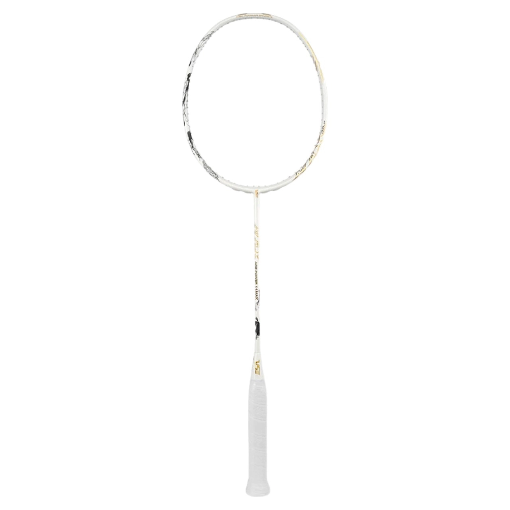
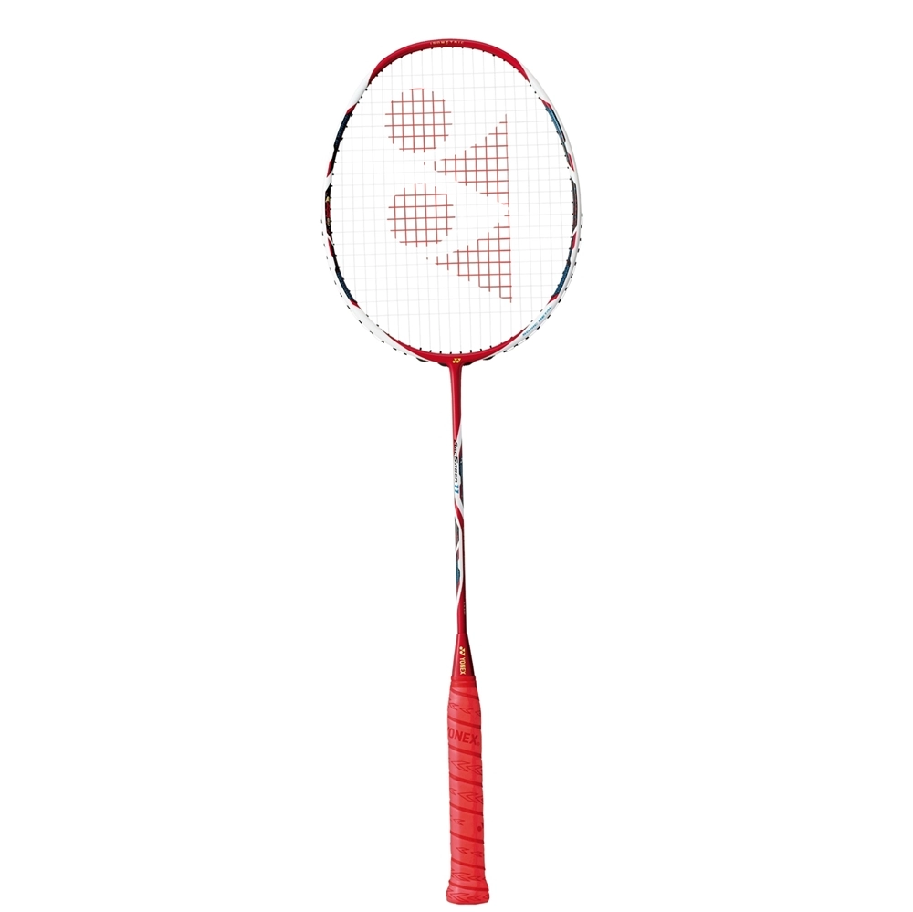
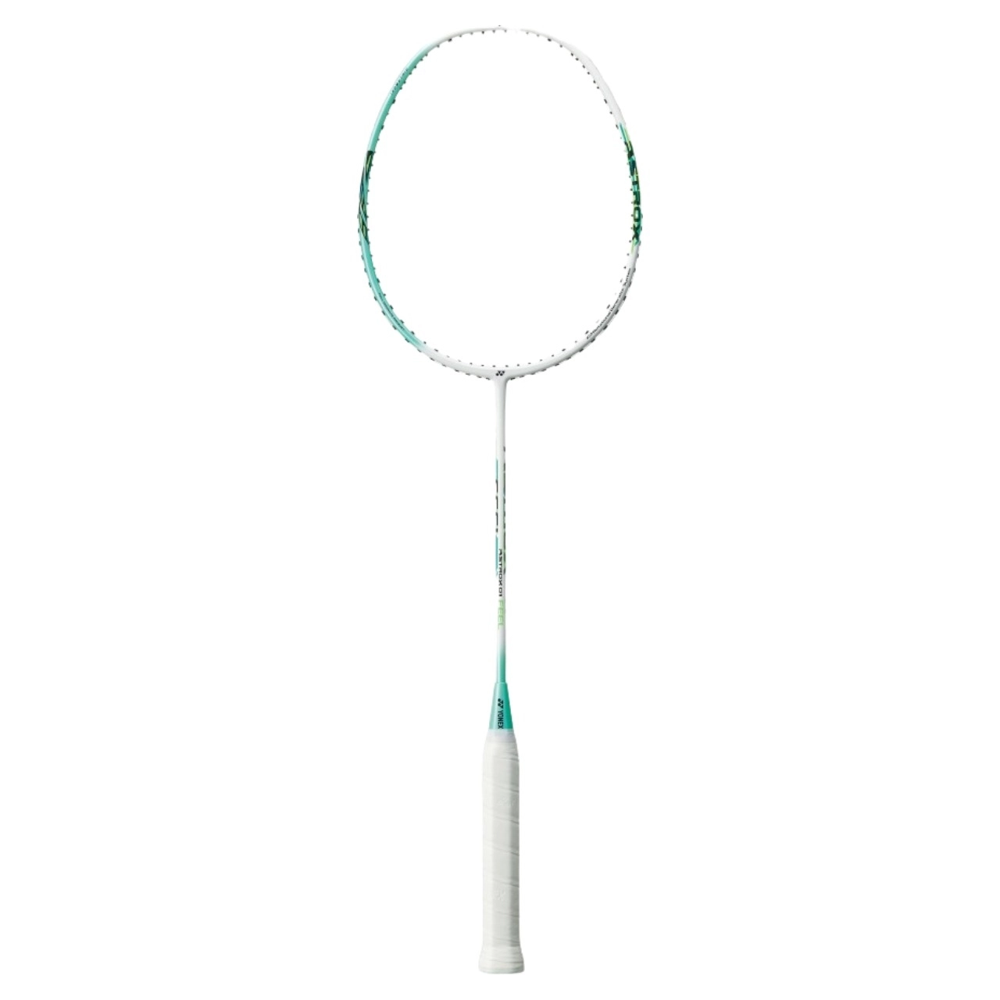

Nếu bạn thích chơi tấn công dồn dập, ép chặt và dứt điểm đối thủ hoặc chơi theo kiểu phòng thủ và chờ khai thác những sơ hở của đối phương và bất ngờ tung ra những cú đánh quyết định, trên thị trường hiện nay có rất nhiều loại vợt công hoặc thủ phù hợp với từng người. Tuy nhiên, còn có một lựa chọn cho những người có lối chơi khác, lối chơi vừa công vừa thủ, thì vợt cầu lông công thủ toàn diện sẽ phù hợp với bạn. Trong bài viết top 3 vợt cầu lông công thủ toàn diện hoàn hảo nhất này, ShopVNB sẽ chia sẻ với các bạn cách lựa chọn những cây vợt nào để phù hợp nhất.
VS ACE Power 11 Max là mẫu vợt mới vừa được VenSon giới thiệu, đánh dấu bước nâng cấp toàn diện từ dòng VS ACE Power 11 quen thuộc. Sản phẩm hướng đến người chơi phong trào, mang đến trải nghiệm mới mẻ nhờ thiết kế hiện đại cùng nhiều cải tiến về công nghệ và cảm giác đánh.
Cây vợt được phát triển với hai phiên bản màu trắng và đen, nổi bật bởi họa tiết bất cân xứng đầy cá tính. Phong cách phối màu tối giản nhưng tinh tế giúp VS ACE Power 11 Max giữ được vẻ ngoài sang trọng và hiện đại khi ra sân.
Dù thuộc phân khúc giá dễ tiếp cận, sản phẩm vẫn được đầu tư kỹ lưỡng về vật liệu. Khung và thân vợt sử dụng High Modulus Carbon kết hợp High Carbon mật độ cao, mang lại độ bền vượt trội và khả năng chịu lực ấn tượng. Nhờ đó, vợt cho phép căng dây tối đa lên đến 35 lbs (15,8 kg), đảm bảo sự ổn định và hiệu suất lâu dài trong quá trình sử dụng.
Đây là dòng vợt cân bằng, đánh linh hoạt, trên lưới hay ve trái tay... tốc độ đi cầu nhanh, kiểm soát tốt, là vợt cầu lông công thủ toàn diện. Được thiết kế khí động học, có mặt rất rộng, thân vợt ngắn tăng khả năng linh hoạt. Vợt cầu lông Yonex Arcsaber 11 cho cảm giác kha dẻo, khác hẳn với bản trước đó. Vợt rất nẩy giúp những pha phông cầu rất tốt chứ không phí sức như những cây vợt dẻo khác.
Những pha cầu ngang của Arc 11 cho tốt độ cực cao, giúp người chơi làm chủ được đường cầu, tốc độ cũng như nhịp độ trận đấu. Thiết kế với tiêu chí vợt cầu lông công thủ toàn diện, Arcsaber 11 có mặt vợt cực kỳ rộng cho cảm giác đầu vợt nặng, giúp những pha tấn công chính xác, cầu đi theo ý.

Yonex Astrox 01F 2024 sở hữu điểm cân bằng hài hòa, phù hợp với người chơi ưa lối đánh linh hoạt, dễ dàng chuyển đổi giữa tấn công và phòng thủ trong các tình huống tốc độ cao. Thuộc phân khúc tầm trung, cây vợt được trang bị thân vợt dẻo giúp trợ lực tốt, kết hợp trọng lượng 4U, rất thích hợp cho người chơi có lực cổ tay chưa mạnh hoặc đang trong giai đoạn làm quen và hoàn thiện kỹ thuật cơ bản. Thiết kế tổng thể nổi bật với tông trắng thanh lịch, điểm xuyết các chi tiết xám tinh tế, mang lại diện mạo hiện đại và cuốn hút.
Dù ở phân khúc dễ tiếp cận, Astrox 01F 2024 vẫn được chế tạo từ vật liệu Graphite bền bỉ, cho khả năng chịu căng lưới lên đến 28 lbs (12,5 kg). Bên cạnh đó, vợt được tích hợp nhiều công nghệ đặc trưng của Yonex như ISOMETRIC mở rộng điểm ngọt và Rotational Generator System giúp phân bổ trọng lượng hợp lý, góp phần nâng cao hiệu suất và trải nghiệm thi đấu cho người chơi phong trào.
